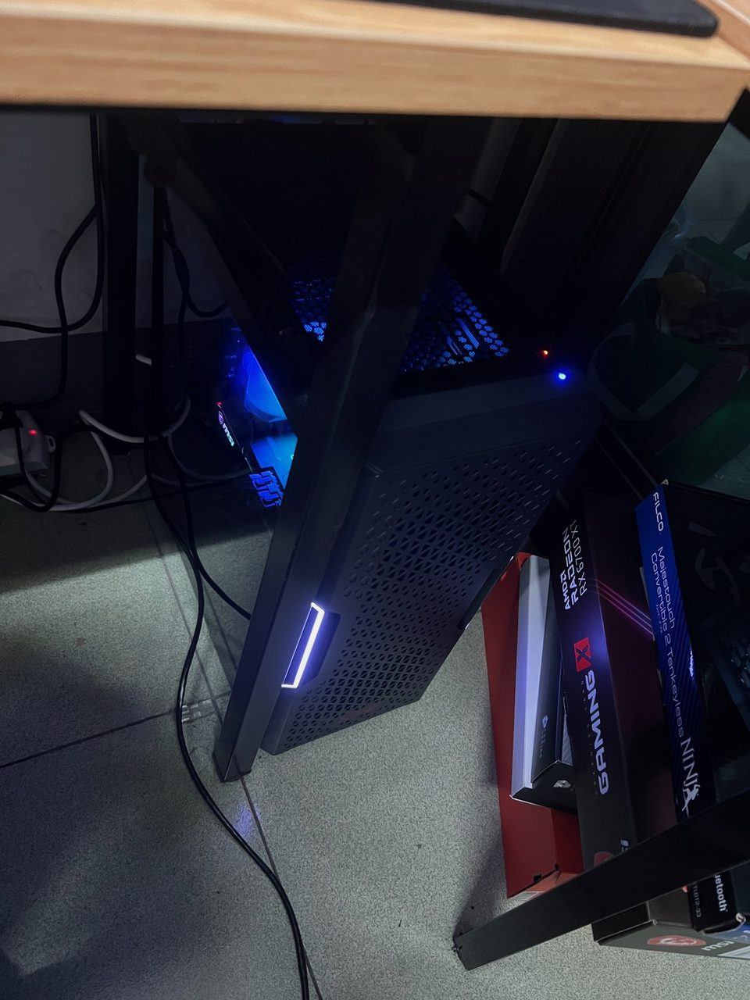

2022 Personal Desktop
A personal desktop assembled in 2022. Building and maintaining it developed my approach to component selection, operating-system setup, troubleshooting, repair, and routine upkeep.
Spec — 2022 Personal Desktop
- CPU
- Intel Core i5-12400F
- GPU
- MSI Radeon RX 6700 XT MECH 2X 12G
- Motherboard
- MSI PRO H610M-G DDR4
- RAM
- ADATA XPG D35 DDR4-3200 · 32 GB
- Storage
- Kingston NV2 NVMe SSD · 1 TB
- PSU
- MSI MAG A650BNL · 650 W
- Case
- ADATA XPG STARKER · Black
- Cooler
- ZEROZONE P4-EX ARGB · Black
A practical platform for everyday system setup and maintenance.